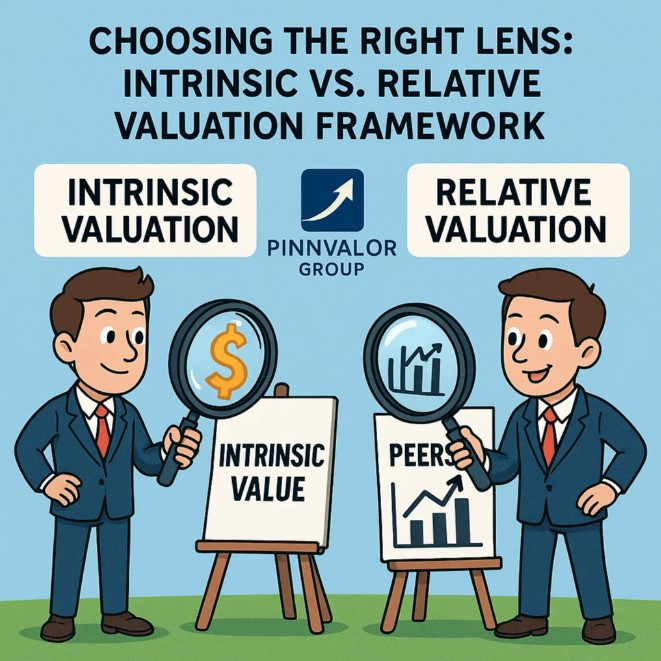

Choosing the Right Lens: Intrinsic vs. Relative Valuation Framework
In the world of finance and investing, valuation is the cornerstone of decision-making. Whether you are an investor evaluating stocks, a corporate strategist considering acquisitions, or a financial analyst assessing opportunities, the ability to estimate the value of an asset is crucial. However, valuation is not a one-size-fits-all process. Two of the most widely used approaches are Intrinsic Valuation and Relative Valuation.
When valuing a company, should you look inward at its fundamentals or outward at the market—Intrinsic or Relative Valuation?
The best analysts don’t choose between intrinsic or relative— they combine both to uncover a range of values, not just a number.
Understanding when and how to use these methods requires a clear decision framework—choosing the right lens for the situation.
🔍 What is Intrinsic Valuation?
Intrinsic valuation attempts to estimate the “true” or “fundamental” value of an asset, independent of market conditions. It is based on the principle that every asset has an underlying value determined by its cash flows, growth potential, and risk.
Methods commonly used:
- Discounted Cash Flow (DCF)
- Dividend Discount Model (DDM)
- Asset-based valuation
Strengths:
- Grounded in fundamentals
- Useful for long-term investors
- Helps identify mispriced securities
Limitations:
- Sensitive to assumptions (growth, discount rates, terminal value)
- Time-consuming and data-intensive
- May diverge significantly from market price in the short run
💡 Think of intrinsic valuation as looking inward—focusing on the company itself rather than the market environment.
🔍 What is Relative Valuation?
Relative valuation determines value by comparing the asset to peers, market averages, or sector multiples. It assumes that similar assets should trade at similar valuations.
Methods commonly used:
- Price-to-Earnings (P/E) ratio
- EV/EBITDA multiple
- Price-to-Book (P/B) ratio
- Price-to-Sales (P/S) ratio
Strengths:
- Quick and widely accepted in practice
- Reflects current market sentiment
- Useful in benchmarking against competitors
Limitations:
- Dependent on market mood and cycles
- Risk of “herd mentality” valuation
- Ignores company-specific fundamentals if not applied carefully
💡 Think of relative valuation as looking outward—valuing the company in relation to others in its ecosystem.
⚖️ Intrinsic vs. Relative Valuation – The Decision Framework
So, how do you choose the right approach? Here’s a structured way to decide:
1. Purpose of Valuation
- Investment decision (long-term, intrinsic worth) → Use Intrinsic Valuation
- Market pricing, IPO, or M&A benchmarking → Use Relative Valuation
2. Data Availability
- Reliable forecasts of cash flows & risk → Intrinsic works best
- Limited forecasts, but strong peer group data → Relative is more practical
3. Market Conditions
- Volatile or speculative market → Intrinsic valuation provides a reality check
- Stable market with active peer comparisons → Relative valuation gives better insights
4. Company Lifecycle Stage
- Startups or growth companies (no profits yet) → Relative valuation is often the only viable method
- Mature, stable companies with predictable cash flows → Intrinsic valuation is more reliable
5. Decision Horizon
- Long-term investors → Intrinsic
- Short- to medium-term traders or dealmakers → Relative
🛠️ Complementary Use: The Best of Both Worlds
In practice, the smartest analysts don’t rely on just one method. Instead, they:
- Start with Intrinsic Valuation → to establish a fundamental anchor.
- Cross-check with Relative Valuation → to see how the market is pricing peers.
This combination helps reduce bias and provides a range of values rather than a single number, allowing more informed decision-making.
✅ Key Takeaways
- Intrinsic valuation = inward-looking, long-term, fundamental-driven.
- Relative valuation = outward-looking, market-driven, benchmark-oriented.
- The right lens depends on purpose, data, market conditions, and company stage.
- The most effective approach often blends both methods to create a balanced perspective.
💭 Final Thought
Valuation is not about finding the perfect number—it’s about building a decision framework that guides smarter choices. By knowing when to rely on intrinsic fundamentals and when to look at relative market benchmarks, investors and analysts can navigate uncertainty with greater confidence.